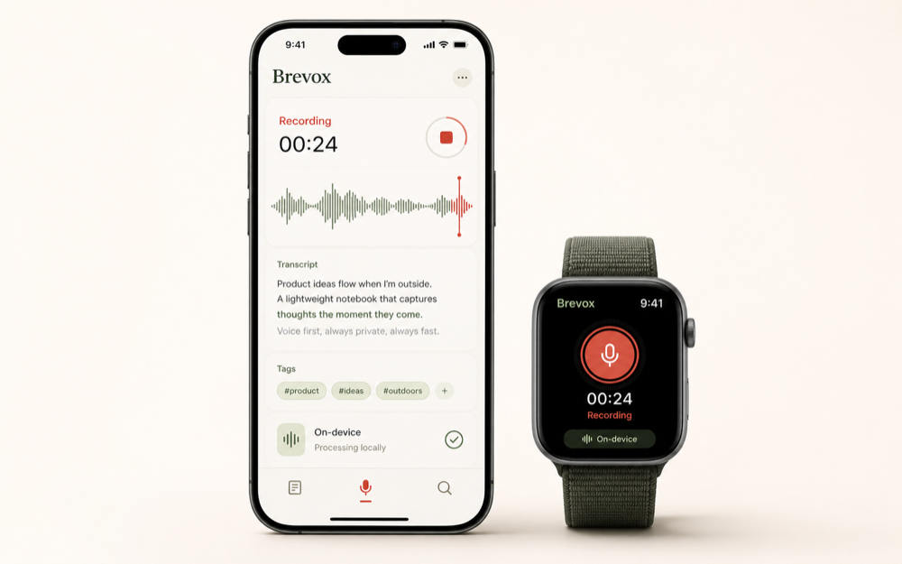

iOS + Apple Watch
TestFlight beta
Voice notes that stay on your device.
85% audio, 15% pen. 100% on-device.
Brevox captures the rough thought, turns it into structured notes locally, and keeps your private voice memory away from servers, dashboards, and tracking pixels.
00:24
Processing locally

Live note
Meeting idea Transcript, summary, tags, and next actions generated locally.
Watch capture
Local AI
Transcript + summary without Brevox servers
Voice-first notebook
Local transcripts
Watch capture
No tracking
Lifetime unlock
Voice-first notebook
Local transcripts
Watch capture
No tracking
Lifetime unlock
Features
Built for the thought before it becomes admin.
Capture without ceremony
Start with voice from iPhone or Apple Watch. Brevox is optimized for walking, commuting, leaving a meeting, or grabbing an idea before it disappears.
Structure locally
Transcripts, summaries, titles, tags, and action-oriented outputs are designed to be produced on your device, not in a remote processing queue.
Use pen for precision
Voice gets the raw material down. Manual edits add intent: tags, corrections, titles, follow-ups, and the small pieces of context only you know.
Workflow
Speak first. Refine later.
Record
Capture a thought, meeting fragment, or voice memo from iPhone or Apple Watch.
Process locally
Brevox converts voice into written structure on-device: transcript, title, summary, tags, and actions.
Return to meaning
Search, filter, edit, and export the note when it becomes useful work.
Create Menu
One recording becomes the format you actually need.
Brevox is not only a recorder. It is a local conversion layer for the messy spoken note.
Generated on-device
Decision note
Summary
Prioritize the TestFlight build, keep the beta small, and validate Watch capture before expanding onboarding.
Actions
- Ship archive candidate
- Invite first beta testers
- Review privacy copy against shipped behavior
Privacy architecture
Your voice is not a cloud resource.
Brevox is built around local capture, local processing, and local ownership. No Brevox account is needed for the core notebook, and Brevox does not collect your recordings, transcripts, or notes.
Read the privacy policy
Mic
Audio
to
Device
Transcript
to
Device
Summary
to
Library
Your notes
Pricing
No subscription story to explain.
Start with the beta. The product direction is a small free tier and a one-time premium unlock.
Beta
TestFlight
Free
- Early iOS and Apple Watch builds
- Private feedback loop with the maker
- No Brevox account required
Planned
Lifetime Premium
$19.99
- One-time unlock
- Unlimited recording workflow after the free tier
- No monthly cloud tax
Private notes for fast minds